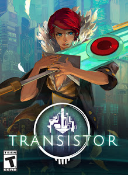

|

|
What is Transistor?
Transistor is a sci-fi themed action RPG that invites players to wield an extraordinary weapon of unknown
origin as they fight through a stunning futuristic city. The game seamlessly integrates thoughtful
strategic planning into a fast-paced action experience, melding responsive gameplay and rich atmospheric storytelling.
During the course of the adventure, players will piece together the Transistor's mysteries as they pursue its former owners.
Have a look at the reveal trailer to get a feel for the game.
|